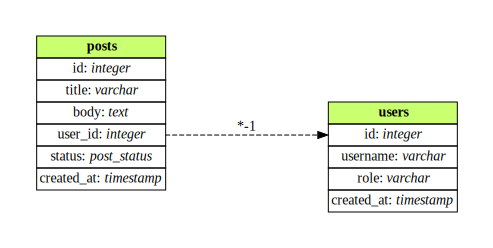
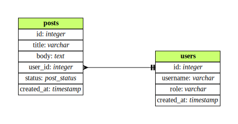
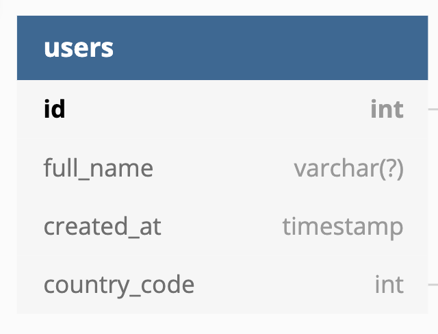

Run FloorPlan from the command line
After checking out this repository, make sure you have Gradle installed and run:
gradlew run --args="<path-to-schema-file>"
Installation with Homebrew
On MacOS you can install FloorPlan also with Homebrew
brew install julioz/tap/floorplan
Command-line arguments
Output format (--format, -f)
FloorPlan can render many output formats, specified by the --format argument:
gradlew run --args="<path-to-schema-file> --format <output-format>"
Currently, the supported formats are:
- DBML
- SVG
- PNG
- DOT
Info
Multiple output formats can be specified through a comma-separated list:
gradlew run --args="<path-to-schema-file> --format <format1>,<format2>,<format3>"
Info
When not present, DBML is picked as default value as output format.
Warning
Some arguments are restricted to their combination with the specified output format. Refer to the individual argument documentation to verify its availability.
Write output to directory (--output, -o)
FloorPlan will write its output file(s) into the specified directory. The directory will be created if it doesn't exist and the input filename will be used to name the output files.
gradlew run --args="<path-to-schema-file> --output <path-to-output-directory>"
ERD Notation (--notation, -n)
FloorPlan supports rendering entity-relationship diagrams using different notations.
gradlew run --args="<path-to-schema-file> --notation <notation-identifier>"
Supported notations
| Name | Identifier | Screenshot |
|---|---|---|
| Simplified Chen (default) | chen |
 |
| Crow's Foot | crowsfoot |
 |
Add CREATION SQL as Table note (--creation-sql-as-table-note, -ctn)
This option is disabled by default since it can be quite verbose and would 'duplicate' what a UI rendering tool (better) provides. Opt-in by specifying:
gradlew run --args="<path-to-schema-file> --creation-sql-as-table-note"
Availability: DBML
Only available when the output format is DBML.
Render nullable fields in data types (--render-nullable-fields, -rnf)

This option is disabled by default, opt-in with:
gradlew run --args="<path-to-schema-file> --render-nullable-fields"
Availability: DBML
Only available when the output format is DBML.